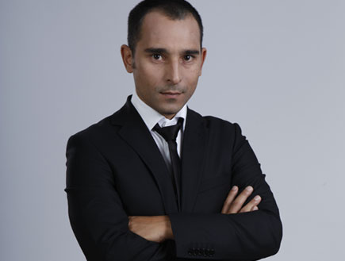

מריאנו אידלמן
Local time:
הקדמה
מריאנו אידלמן (נולד ב-27 ביוני 1974) הוא קומיקאי, שחקן, מדבב וסטנדאפיסט ישראלי. ידוע כפאנליסט בתוכנית הסאטירית "ארץ נהדרת" וכשותפו של אלי פיניש לצמד הקומי "אלי ומריאנו"
מהלך הקריירה
מריאנו נולד בארגנטינה, כבן יחיד ללואיסה ומרטין - רופא במקצועו. המשפחה עלתה לישראל בשנת 1978, כשמריאנו היה בן ארבע, וקבעה את מגוריה בנתניה. כעבור כמה שנים נפטרה אמו ממחלת הסרטן. מריאנו למד עם אלי פיניש בתיכון ״שרת״ בעיר. הוא למד תיאטרון בבית הספר למשחק "הבוסתן", והופעתו הטלוויזיונית הראשונה הייתה ב-1990 בתוכנית הטלוויזיה לילדים "קריאת כיוון", ששודרה בטלוויזיה החינוכית.
בשנת 1996, מיד לאחר שירותו הצבאי, החל מריאנו את קריירת המשחק שלו, כאשר את הופעתו הראשונה ביצע לצד שותפו אלי פיניש בפינת הסטנד-אפ של תוכנית הבידור של דודו טופז "הראשון בבידור" ששודרה בערוץ 2, שם זכה הצמד לחשיפה. בהמשך השניים אף קיבלו פינה קבועה בתוכנית, בה השתתפו במשך שנתיים. הצמד העלה מופע סטנד-אפ בשם "אלי ומריאנו עוברים על הצחוק". בהמשך הופיעו בסדרה משלהם, "אחלה סרט".
בשנת 2002 הוציא הצמד לשוק דיסק DVD שמכיל קטעים ממופע הסטנדאפ שלהם. באותה שנה השתתף מריאנו בסדרת הדרמה "שבתות וחגים" (עונה 3), וכן הופיע בתוכנית הסטנדאפ של ערוץ ביפ "לא נפסיק לצחוק".
החל מ-2003, משתתף אידלמן בכל העונות של תוכנית הסאטירה "ארץ נהדרת", ששודרה תחילה בערוץ 2 ומאוחר יותר בערוץ 12 במסגרת שידורי קשת. בתוכנית מחקה מריאנו אנשי ציבור כמו: שאול מופז, בנימין נתניהו, עמיר פרץ, פנינה רוזנבלום, מרגלית צנעני, אריה דרעי, ד"ר שקשוקה, אייל ברקוביץ' ודוד בן-גוריון. בנוסף גילם אידלמן שלל דמויות פיקטיביות במערכונים של הסדרה.
בשנת 2004 השתתף בסרטו של אבי נשר "סוף העולם שמאלה" ובסרטו של שי כנות "אהבה קולומביאנית".
בין השנים 2007–2013 שיחק מריאנו בסדרת הדרמה-הקומית, "עבודה ערבית", לצד נורמן עיסא ואחרים. בסדרה רוב הגיבורים הם ערבים ישראלים, ומריאנו גילם בה צלם חדשות יהודי החי בשכנות לגיבור הסדרה (עיסא).
מריאנו השתתף ב-2008 בסדרת הדרמה "על קצות האצבעות", שם גילם את השוטר בעל מום הפציאליס. הסדרה זכתה בפרס מסך הזהב לשנת 2008.
בשנת 2010 שיחק בסרט של חבורת "ארץ נהדרת", "זוהי סדום".
בשנת 2013 השתתף ב-"X פסטיגל" בתפקיד "מאסטר X", לצד יובל סמו.
בשנים 2012–2014 שיחק בסדרה "הפרלמנט" בתפקיד הקטור.
ב-2014 השתתף בסרט הקומדיה "שושנה חלוץ מרכזי" בבימויו של שי כנות ובאותה שנה השתתף במשחקי הפסטיגל לצד אלי פיניש.
ב-2015 החל לשחק בסדרה הקומית "לה פמיליה" של ערוץ 10.
ב-2021 השתתף באלבום "השחור החדש יותר" של גיא מזיג בשיר "The Funky Zachen" ובסדרה מי פה הבוס?, בה הוא מגלם את סגל.
בשנת 2004 מריאנו דיבב את ברני הכריש בסרט "תפוס ת'כריש".
בשנת 2008 דיבב את ראש העיר מקדוד בגרסה העברית של הסרט "הורטון שומע מישהו".
חייו האישיים
מריאנו אב לארבעה ילדים, ומתגורר בנתניה.
